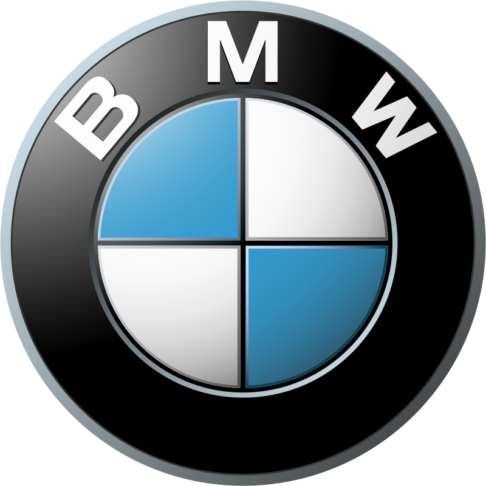

In 2015, BMW was the world's twelfth-largest producer of motor vehicles, with 2,279,503 vehicles produced.
The company has significant motorsport history, especially in touring cars, Formula 1, sports cars and the Isle of Man TT.BMW is headquartered in Munich and produces motor vehicles in Germany, Brazil, China, India, South Africa, the United Kingdom, the United States and Mexico.
The Quandt family is a long-term shareholder of the company, following brothers Herbert and Harald Quandt's investments in 1959 which saved the company from bankruptcy. 